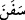

Bunların hepsi erkek-kadın seksen kişiydi.
Kâşîfî der ki: Yâni müminlerden onunla olanlar ve canlılardan/hayvanlardan gemide
bulunanların hepsi seksen kişiydi demektir.
Aslında “gemi” kelimesi; “kabuğunu soydu” mânâsına gelen “__WORD__ kökünden
türetilmiştir. Sanki geminin suyu yararak gitmesi, kabuğu soymaya benzetilmiştir.
“Sefîne”; “faîle” vezninde olup ism-i fâil mânâsında kullanılmıştır.
“Ve bunu” yâni bu gemiyi ya da bu kıssayı “âlemlere” sonra gelen insanların öğüt
almaları için “bir ibret” vesilesi ya da Allah’ın kudretine istidlâl edecekleri bir delil,
bir âyet “yaptık.”
Ebü’l-Leys, bu ayetin tefsirinde der ki: Bu gemi, Cûdî dağında, Rasûlullah (s.a.)’in
zuhuruna yakın bir zamana kadar kalmıştı. Fethurrahman’da kaydedildiğine göre, tufan
ile hicret-i Nebeviyye arasında 3974 yıl vardır. Dolayısıyla bu gemi, onu gören ve
görmeyenler için bir ibret ve alamet olmuştur. Çünkü görmeyen kimseye de en azından
onun haberi ulaşmıştır.
Rivayete göre; Nûh (a.s.), kırk yaşının başında peygamber olarak gönderildi. Kavmini
950 sene Hakk’a dâvet etti. Tufandan sonra 60 sene yaşadı. Ve nihayet insanlar tekrar
çoğaldılar ve yayıldılar. Bostan’da kaydedildiğine göre bunlar Nuh (a.s.)’ın Hâm, Sâm
ve Yâfes adlı evlâdlarındandır. Çünkü gemiden çıktıklarında Nuh (a.s.)’ın evlâdlarının
dışındaki insanların hepsi vefat etmişti. Dolayısıyla Nuh (a.s)’ın ömrü 1050 yıla ulaştı.
O, peygamberlerin en uzun ömürlü olanıdır. Bunun için ona “Peygamberlerin büyüğü,
Rasûllerin şeyhi” denilmiştir. Ve yine Nuh (a.s.), Peygamberimiz (a.s.)’den sonra
yerden çıkarılacak ilk kimsedir.
Kâşîfî der ki: Ölüm meleği ruhunu kabzedeceği sırada ona sordu: “Ey ömür itibariyle
peygamberlerin en uzun ömürlüsü! Dünyayı nasıl buldun?” Şu cevabı verdi: “İki kapısı
olan bir ev gibi buldum dünyayı; birinden girerler diğerinden çıkarlar.”
Nuh ve Lokman’ın ömrü kadar ömre sâhip olsan da
Ferman geldiği zaman çekip gidersin
Dünyada yaşayıp gittiğin zamanki süre
Bir gün de olsa bir yıl da olsa birdir
Denildi ki:
Dikkat et! Dünya, ancak bulut gölgesi gibidir.
Bir gün seni gölgelendirir, sonra yok olur.
O sana yönelince aşırı sevince kapılma.
O senden dönüp uzaklaşınca da bağırıp çağırma.
Hasan Basrî demiştir ki: “Kıyamet gününde insanların sevap bakımından en
faziletlisi ömrü uzun olan mümindir.”